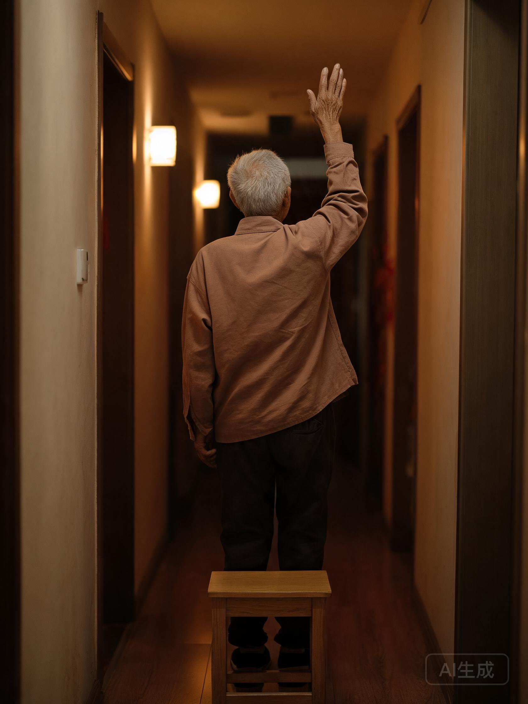
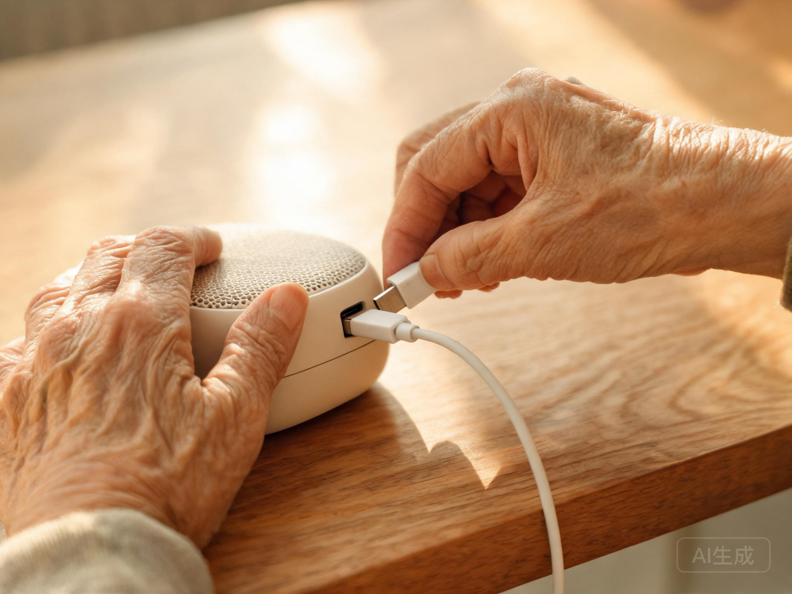
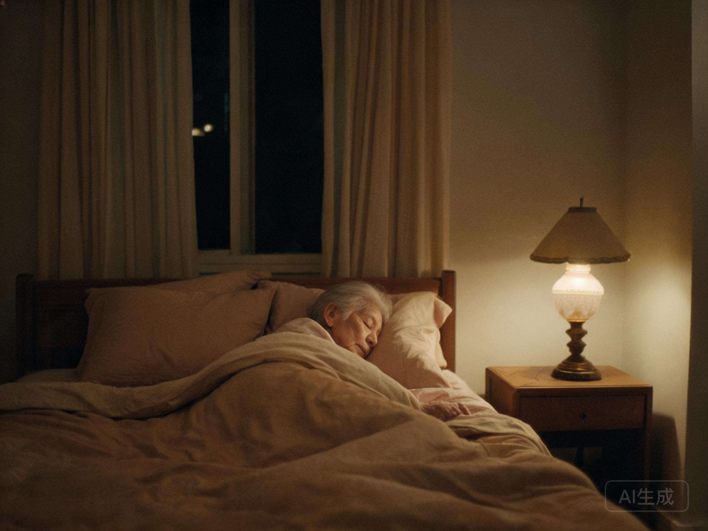
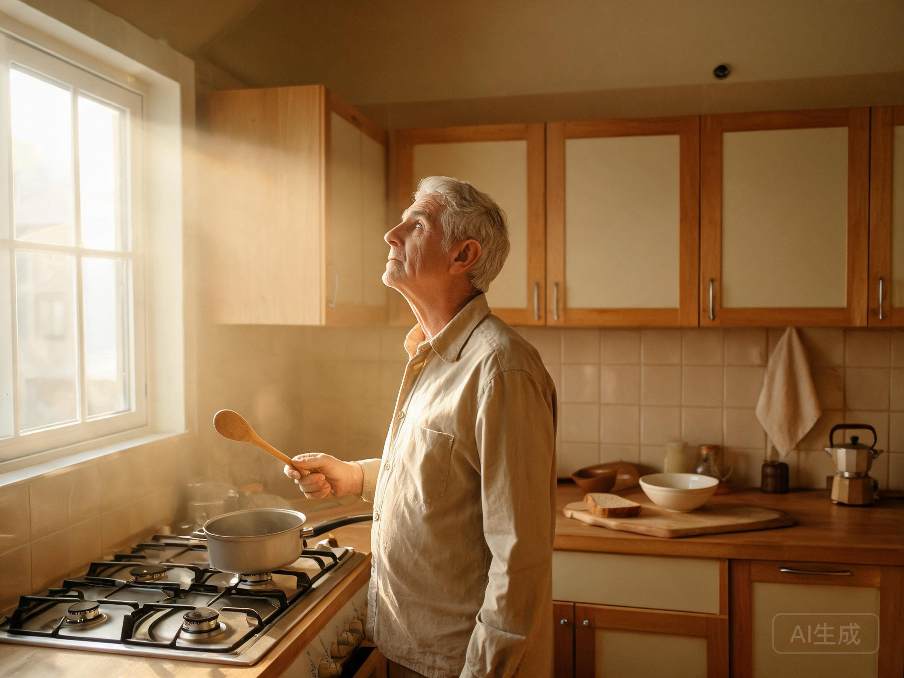
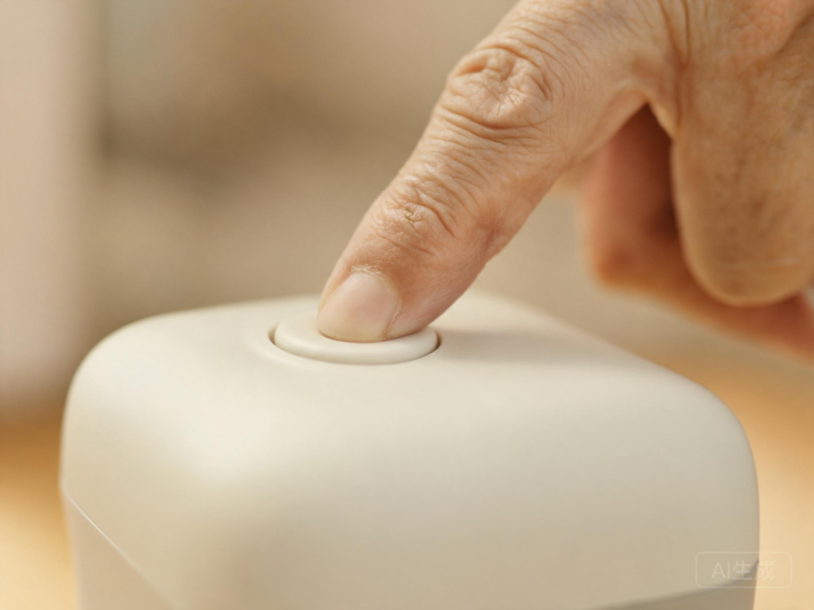

挂得太高每次都要仰头
大字时钟
不用换电池，不用调时间。
挂上、放下，就一直是准的。
上面是可播放的分镜样片：9 个镜头、共约 30 秒，带人声讲解和轻钢琴配乐；点画面播放或暂停，拖动进度条可跳转，控制条上的 ♪ 和人 两个小键可以分别关掉配乐、关掉人声。实拍成片后，把这一段换成 <video> 即可，其余版式不用动。
一 · 看清
屏幕上三分之一都是字。
坐在沙发上，三米外也认得出几点。
示意图按对角线尺寸等比例排列，左侧为常见 6.1 英寸手机。
二 · 以前那盏钟
挂得太高每次都要仰头
字太小不戴眼镜看不清

没电了还得踩凳子摘下来
换完电池，时间还得重新对一遍。
三 · 开箱
不用扫码，不用连手机，不用对着说明书一项项设。
出厂就把时间对好了。
不连 WiFi 也能用。时间照常显示，一样看；
连上 WiFi，它会自己校准，一直准。
拆开
拿出钟，接上电
按一下
按下开关键，屏幕亮
看时间
时间已经是对的
说明书只印一页，看图就会；万一不会，打个电话有人一步步教。
四 · 装上就不用管
锂电池充电，不买电池、不搬梯子。
连上家里的 WiFi，时间自己校准。

停电、断网也不怕，时间不会丢，来电自己恢复；没有 WiFi 的家里，可以用手机热点对一次。
五 · 夜里
柔光，不刺眼。
起夜看时间，不用开灯，也不吵醒老伴。

亮度分三档，白天亮、夜里暗，也可以整夜不熄。
六 · 到点
早上、午后各设一个。
声音大，不用一直盯着钟。

提醒由家人提前设好，到点自动响，响过自动停，不用管。
七 · 出门前
温度和湿度都在钟面上。
扫一眼，穿几件、要不要晒被子，心里有数。
八 · 好按
凸起来，摸得到。
长按才生效，按错了一键恢复。

不用翻说明书，也不用进菜单。调的时候只有三件事：调时间、设提醒、调亮度。
九 · 放哪儿
三处都放得下的时候，客厅、卧室各一盏，走到哪儿都看得见。
十 · 参数
| 屏幕尺寸 | 8 英寸（示例） |
|---|---|
| 数字高度 | 约 6.5 厘米 |
| 显示内容 | 时间、日期、星期、温度、湿度 |
| 对时方式 | 不连 WiFi 也能正常显示；连上 WiFi 自动校准 |
| 供电 | 锂电池充电，一次约 90 天（示例） |
| 提醒 | 多组定时提醒，音量可调 |
| 背光 | 三档亮度，可按压点亮 |
| 安装 | 壁挂 / 立放两用，附挂件与支架 |
| 附件 | 充电线、挂件、支架、大字说明书 |
| 保修 | 三年 |
示例数值以实际产品为准。
买给爸妈，或者买给自己，都是同一盏。
三年保修，说明书看不懂，打个电话就有人教。
大字时钟
拍摄用 · 口播稿（发布前删除本屏）
全片约 30 秒，九句话，跟九个镜头一一对应。语速放慢，每句之间留半拍气口。页面里的播放器已经按这份稿子念了一遍。
配乐：钢琴独奏，一分钟 60～70 拍，没有人声、没有鼓点；音量压到人声的三分之一，句尾别盖住字。